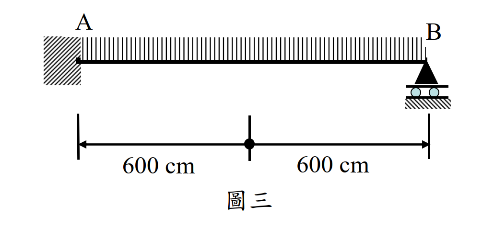

考題編號：SS-2021-3
主分類： SS-U1-2 梁桿件
副分類： 無
設計法： LRFD
標籤： 梁桿件 耐震緊實斷面 LTB側扭挫屈 斷面選擇 側扭挫屈 形狀因子 側向支撐 SN耐震鋼材 SM490 塑性機構
1. 原始題目重述 (Problem Restatement)
耐震結構系統中有一如圖三所示承受均布載重（$w$）之鋼梁，該鋼梁採用 SM490 鋼材，$F_y = 3.5$ tf/cm²，$F_u = 4.9$ tf/cm²，$F_r = 1.16$ tf/cm²，$E = 2040$ tf/cm²。該梁在 A 點與鋼柱彎矩接合處及 B 點有充分側向支撐。自表一選擇一符合極限設計法規範耐震設計需求且可有效發揮斷面性質之最適當斷面，並詳細說明原因，未說明原因者不予計分。請計算所選擇斷面塑性彎矩強度及形狀因子後，再依極限設計法規範檢核該斷面是否足以發揮其塑性極限強度，若無法發揮其塑性強度請說明如何改善以使其可發揮塑性極限強度；若可發揮其塑性強度亦請說明理由，並計算其塑性極限強度。（45 分）
考卷參考公式（「請自行選擇適合的公式，並檢查其正確性」）：$\lambda_{pd} = 14/\sqrt{F_y}$、$17/\sqrt{F_y}$、$37/\sqrt{F_y - F_r}$（翼板）；$138/\sqrt{F_y}$、$170/\sqrt{F_y}$、$260/\sqrt{F_y}$（腹板）；$L_p = 80r_y/\sqrt{F_{yf}}$；$L_r = \dfrac{r_yX_1}{F_L}\sqrt{1 + \sqrt{1 + X_2F_L^2}}$；$M_r = F_LS_x$；$F_L = \min(F_{yf} - F_r,\ F_{yw})$；$M_{cr}$ 彈性式；$C_b = 1.75 + 1.05(M_1/M_2) + 0.3(M_1/M_2)^2 \le 2.3$；$\phi = 0.9$。

圖說（依考卷原圖 450 dpi 目視判讀）：A 端以斜線表示與柱固接（彎矩接合），B 端為三角形加滾輪的滾支承；全跨 1200 cm，跨中的圓點只是尺寸線分段標記，不是側撐。側撐只有 A、B 兩點 → $L_b = 1200$ cm。表一中 BH700×300×9×19 的 $A = 156$ cm² 與尺寸算得 $2 \times 30 \times 1.9 + 66.2 \times 0.9 = 173.6$ cm² 不符（題表數字有誤，此斷面本就被寬厚比淘汰，不影響答案）。
2. 考題核心精神與出題者意圖 (Core Concepts & Examiner's Intent)
核心觀念：耐震梁的三道門檻——寬厚比（λpd）→ 側向支撐（$L_b \le L_p$ 且符合耐震側撐間距）→ 塑性極限強度
出題者要考生：
1. 用耐震緊實斷面 $\lambda_{pd}$（不是一般 $\lambda_p$）篩選；
2. 說出「哪一個斷面最適合當梁」的理由——強軸受彎要靠深度，同樣的鋼料放在離中性軸愈遠愈有效；
3. 算 $Z_x$、$M_p$、形狀因子；
4. 認出 $L_b = 12$ m 太長、無法發揮 $M_p$，並提出加側撐的具體做法；
5. 加側撐後計算塑性極限強度（塑性鉸機構）。
3. 解題戰略地圖與陷阱分析 (Strategic Roadmap & Trap Analysis)
步驟規劃：
1. 四斷面逐一檢核 $\lambda_{pd}$ → 淘汰 BH700×300×9×19
2. 比較剩餘三斷面的強軸受彎效率（$Z_x$／重量）→ 選 BH700×300×12×25
3. 算 $Z_x$、$M_p$、$f$
4. $L_p$、$L_r$ → $L_b = 1200 > L_r$ → 彈性 LTB，$M_n < M_p$
5. 改善：側撐間距 ≤ $L_p$ 且 ≤ 耐震限值 → 每 3 m 一處
6. 塑性極限強度：一端固接一端簡支受均布 → $w_u = 11.66M_p/L^2$
關鍵陷阱：
⚠️ 陷阱1：用一般 $\lambda_p$ 而非耐震 $\lambda_{pd}$。 翼板 $14/\sqrt{F_y} = 7.48$、腹板 $138/\sqrt{F_y} = 73.8$。
⚠️ 陷阱2：$L_r$ 公式代 $r_T$。 考卷印的 $L_r$ 式用的是 $r_y$（LRFD 的 $X_1$、$X_2$ 體系）；$r_T$ 是 ASD $F_b$ 公式用的。
⚠️ 陷阱3：「有效發揮斷面性質」誤解為「選 $r_y$ 最大」。 寬翼 500×500 的 $r_y$ 大、$L_p$ 長，但它的鋼料多放在翼板寬度方向，強軸受彎的 $Z_x$／重量比明顯較低；作為耐震梁，側撐本來就必須加，$L_p$ 長短不是決定性因素。
⚠️ 陷阱4：中點圓點當成側撐。 那是尺寸線標記；題文明言只有 A、B 有側撐。
3.5 變數層次分析（Variable Hierarchy Analysis）
複習提示：解題後，在每個卡住的知識點「卡關?」欄標記
⚠；第二次複習時只看有⚠的項目。
最終目標： $\lambda_{pd}$ 篩選 → 選斷面（附理由）→ $Z_x$、$M_p$、$f$ → $L_b$ 檢核 → 改善 → 塑性極限強度
主要公式（$\boxed{\phantom{x}}$ = 未知，待推導）
$$\lambda_{pdf} = \frac{14}{\sqrt{F_y}},\quad \lambda_{pdw} = \frac{138}{\sqrt{F_y}},\qquad \boxed{Z_x} = b_ft_f(d - t_f) + \frac{t_wh_w^2}{4},\quad \boxed{M_p} = F_yZ_x,\quad \boxed{f} = \frac{Z_x}{S_x}$$
$$L_p = \frac{80r_y}{\sqrt{F_y}},\quad L_r = \frac{r_yX_1}{F_L}\sqrt{1 + \sqrt{1 + X_2F_L^2}},\quad \boxed{w_u} = \frac{11.66M_p}{L^2}$$
L1：題目直接給定
| 符號 | 數值 | 說明 |
|---|---|---|
| $F_y$、$F_r$、$E$ | 3.5、1.16、2040 tf/cm² | SM490 |
| 支承 | A 固接（梁柱彎矩接合）、B 滾支 | 一端固一端簡支 |
| $L$ | 1200 cm | 全跨 |
| 側撐 | A、B | $L_b = 1200$ cm |
| 斷面 | 表一四種 | 含 $X_1$、$X_2$、$r_y$、$S_x$ |
L2：需知識點推導
| 符號 | 公式 / 來源 | 卡關? |
|---|---|---|
| $\lambda_{pdf}$、$\lambda_{pdw}$ | 7.48、73.8 | |
| BH700×300×9×19 | 翼板 7.89 > 7.48 → 淘汰 | |
| 其餘三斷面 | 皆符合 $\lambda_{pd}$ | |
| 效率比較 | $Z_x/A$：700×300×12×25 = 27.8 cm；500×500×16×36 = 21.2；500×500×25×50 = 20.4 | ⚠ |
| 選定 | BH700×300×12×25 | |
| $Z_x$ | $30 \times 2.5 \times 67.5 + 1.2 \times 65^2/4 = 6{,}330$ cm³ | |
| $M_p$、$f$ | 221.6 t·m、$6{,}330/5{,}670 = 1.116$ | |
| $L_p$、$L_r$ | 300.6 cm、898 cm | |
| $M_n$（$L_b = 1200$） | 彈性：$C_b = 1.0$ → 86.8 t·m（$C_b = 1.75$ → 151.9）< $M_p$ | |
| 改善 | 側撐間距 ≤ $\min(L_p,\ 0.086r_yE/F_y) = \min(300.6,\ 352)$ → 每 300 cm | ⚠ |
| 塑性極限 | $w_u = 11.66 \times 221.6/12^2 = 17.9$ t/m |
L3：深層知識（不懂就卡住）
| 知識點 | 說明 | 補強頁 | 卡關? |
|---|---|---|---|
| 耐震 $\lambda_{pd}$ | 要維持大塑性轉角（約 0.03 rad）不局部挫屈，比 $\lambda_p$ 嚴 | COMPACT-SECTION | |
| 強軸受彎效率 | $Z_x \approx A_fd + A_wd/4$，深度愈大愈有效 | SHAPE-FACTOR | |
| 耐震梁側撐間距 | AISC 341（我國耐震規定同源）：$L_b \le 0.086r_yE/F_y$，塑性鉸處另須側撐 | ltb-3zone | |
| 一端固一端簡支塑性機構 | 固端與距簡支端 $0.414L$ 處形成塑性鉸，$w_u = 11.66M_p/L^2$ | PLASTIC-MOMENT-MP | |
| $C_b$ 公式適用 | 1.75 式假設段內彎矩線性變化；本題為拋物線，保守取 1.0 | cb-factor |
4. 步驟化詳細計算過程 (Step-by-Step Detailed Calculation)
Step 1：耐震緊實斷面檢核（$\lambda_{pd}$）
$$\lambda_{pdf} = \frac{14}{\sqrt{3.5}} = 7.48,\qquad \lambda_{pdw} = \frac{138}{\sqrt{3.5}} = 73.8$$
| 斷面 | $b_f/2t_f$ | $h/t_w$ | 結果 |
|---|---|---|---|
| BH700×300×9×19 | 7.89 > 7.48 | 73.6 | ❌ 翼板不合格 |
| BH700×300×12×25 | 6.00 | 54.2 | ✅ |
| BH500×500×16×36 | 6.94 | 26.8 | ✅ |
| BH500×500×25×50 | 5.00 | 16.0 | ✅ |
Step 2：選擇最適當斷面
| 斷面 | $A$ (cm²) | 單位重 (kg/m) | $Z_x$ (cm³) | $M_p$ (t·m) | $Z_x/A$ (cm) | $L_p$ (cm) |
|---|---|---|---|---|---|---|
| BH700×300×12×25 | 228 | 179 | 6,330 | 221.6 | 27.8 | 300.6 |
| BH500×500×16×36 | 428 | 336 | 9,085 | 318.0 | 21.2 | 564.5 |
| BH500×500×25×50 | 600 | 471 | 12,250 | 428.8 | 20.4 | 564.5 |
選定 BH700×300×12×25，理由：
1. 符合耐震緊實斷面（翼板 6.00 < 7.48、腹板 54.2 < 73.8）。
2. 強軸受彎最有效：每單位面積提供的塑性模數最大（27.8 cm，比寬翼斷面高 31%～36%），重量只有 500×500×16×36 的 53%。梁受強軸彎矩，鋼料應放在離中性軸遠處（深梁），寬翼 500×500 屬於柱用斷面。
3. 寬翼斷面雖然 $r_y$ 大、$L_p$ 較長，但耐震梁本來就要依耐震規定加側撐（見 Step 5），$L_p$ 的優勢不能抵銷 88% 的用鋼增加。
4. 耐震「強柱弱梁」也希望梁的 $M_p$ 不要無謂地大，避免柱子跟著加大。
若以「不加側撐時折減最少」為選擇準則，也可主張 BH500×500×16×36（$L_p = 565$ cm、$L_r = 2{,}465$ cm，$L_b = 1200$ 時 $M_n = 275.6$ t·m），但答案中須說明其用鋼量近乎加倍、且仍無法不加側撐就發揮 $M_p$。
Step 3：塑性彎矩與形狀因子（BH700×300×12×25）
$$h_w = 70 - 2 \times 2.5 = 65\ \text{cm}$$
$$Z_x = b_ft_f(d - t_f) + \frac{t_wh_w^2}{4} = 30 \times 2.5 \times 67.5 + \frac{1.2 \times 65^2}{4} = 5{,}062.5 + 1{,}267.5 = \boxed{6{,}330\ \text{cm}^3}$$
$$M_p = F_yZ_x = 3.5 \times 6{,}330 = 22{,}155\ \text{tf·cm} = \boxed{221.6\ \text{t·m}}$$
$$f = \frac{Z_x}{S_x} = \frac{6{,}330}{5{,}670} = \boxed{1.116}$$
Step 4：檢核能否發揮塑性強度（$L_b = 1200$ cm）
$$L_p = \frac{80 \times 7.03}{\sqrt{3.5}} = 300.6\ \text{cm},\qquad F_L = \min(3.5 - 1.16,\ 3.5) = 2.34\ \text{tf/cm}^2$$
$$L_r = \frac{7.03 \times 144}{2.34}\sqrt{1 + \sqrt{1 + 1.82 \times 2.34^2}} = 432.6 \times 2.076 = 898\ \text{cm}$$
$L_b = 1200 > L_r$ → 彈性 LTB：
$$M_{cr} = \frac{C_bS_xX_1\sqrt2}{L_b/r_y}\sqrt{1 + \frac{X_1^2X_2}{2(L_b/r_y)^2}},\qquad \frac{L_b}{r_y} = \frac{1200}{7.03} = 170.7$$
$$M_{cr}(C_b = 1) = \frac{5{,}670 \times 144 \times 1.414}{170.7}\sqrt{1 + \frac{144^2 \times 1.82}{2 \times 170.7^2}} = 6{,}764 \times 1.283 = 8{,}680\ \text{tf·cm} = 86.8\ \text{t·m}$$
$C_b$： A 端負彎矩 $wL^2/8 = 18w$，跨內正彎矩最大 $9wL^2/128 = 10.1w$，彎矩圖為拋物線（中間有反曲點），考卷的 1.75 式只適用於線性彎矩圖。保守取 $C_b = 1.0$；即使以 1.75 式（$M_1/M_2 = 0$）取 1.75，$M_{cr} = 151.9$ t·m 仍小於 $M_p = 221.6$ t·m。
$$\boxed{M_n < M_p\quad\Rightarrow\quad\text{無法發揮塑性極限強度}}$$
Step 5：改善方式
- 增設中間側向支撐，使每段 $L_b \le L_p = 300.6$ cm，同時滿足耐震梁側撐間距限制 $L_b \le 0.086r_yE/F_y = 0.086 \times 7.03 \times 2040/3.5 = 352$ cm。
- 取每 300 cm 一處（距 A 端 3、6、9 m，共 3 處），各段 $L_b = 300 \le 300.6$ cm → $M_n = M_p$。
- 塑性鉸位置（A 端與距 B 端約 $0.414L = 4.97$ m 處，即距 A 約 7.0 m）附近也要有側撐：A 端由梁柱接頭提供，正彎矩鉸落在 6～9 m 段內，兩端皆有側撐。
- 側撐須同時拘束上下翼板（或以樓板＋下翼板角撐），且具足夠強度與勁度（可取翼板力的 2%）。
Step 6：塑性極限強度
側撐後各段皆可發揮 $M_p$。一端固接、一端簡支梁受均布載重的塑性機構：固端塑性鉸＋跨內塑性鉸（距簡支端 $x = (\sqrt2 - 1)L = 0.414L$）：
$$w_u = \frac{2M_p}{x^2} = \frac{2M_p}{(0.414L)^2} = \frac{11.66M_p}{L^2} = \frac{11.66 \times 221.6}{12^2} = \boxed{17.9\ \text{t/m}}$$
（以設計強度計 $\phi_b = 0.9$：16.1 t/m。）
雙路徑驗算（虛功法）： 設跨內鉸在距 B 端 $x$，令 $\theta_B = \delta/x$、$\theta_A = \delta/(L - x)$，內功 $M_p[\theta_A + (\theta_A + \theta_B)]$，外功 $w L\delta/2$ → $w = \dfrac{2M_p(2L - x)}{Lx(L - x)}$，對 $x$ 求極小得 $x = 0.586L$（距 A）= 0.414L（距 B），$w_u = 11.66M_p/L^2$ ✔。
計算彙整
| 項目 | 數值 |
|---|---|
| 選定斷面 | BH700×300×12×25 |
| 耐震寬厚比 | 翼板 6.00／7.48、腹板 54.2／73.8 ✓ |
| $Z_x$ | 6,330 cm³ |
| $M_p$ | 221.6 t·m |
| 形狀因子 $f$ | 1.116 |
| $L_p$／$L_r$ | 300.6／898 cm |
| $L_b = 1200$ cm | 彈性 LTB，$M_n$ = 86.8（$C_b = 1$）～151.9（$C_b = 1.75$）t·m < $M_p$ |
| 改善 | 每 300 cm 加側撐（3 處），上下翼板皆撐 |
| 塑性極限強度 | $w_u = 17.9$ t/m（$\phi$ 後 16.1） |
5. 關鍵爭議點與進階探討 (Critical Issues & Advanced Discussion)
舊版解析的錯誤
| 項目 | 舊解 | 更正 |
|---|---|---|
| 選擇理由 | BH500×500×16×36「$r_y$ 最大、最輕」 | 它的 $A = 428$ cm²，是合格三斷面中第二重，並非最輕；最輕且強軸受彎最有效的是 BH700×300×12×25（228 cm²） |
| $L_r$ | 以 $r_T$ 代入（得 1,023／2,615 cm） | 考卷式用 $r_y$：898／2,465 cm |
| 改善 | 每 400 cm 側撐 | 若選 500×500，400 cm ≤ $L_p$ 565 且 ≤ 耐震限值 662 cm 可行；若選 700×300，需 300 cm |
| 塑性極限強度 | 只給 $\phi_bM_p$ | 題目要「塑性極限強度」，應給塑性機構載重 $w_u$ |
耐震設計的 $\lambda_{pd}$ 為何比 $\lambda_p$ 更嚴格？
一般 $\lambda_p$ 只保證能到達 $M_p$；耐震梁要在反覆載重下維持塑性轉角（約 0.03 rad）而不局部挫屈，翼板、腹板寬厚比都要更小。
考場安全答法
- 寫出 $\lambda_{pd}$ 兩個值並淘汰 BH700×300×9×19。
- 寫「最適當」的理由：符合 $\lambda_{pd}$、強軸受彎最有效（$Z_x$／重量最大）、最輕。
- $Z_x$、$M_p$、$f$。
- $L_b = 1200 > L_p$（甚至 $> L_r$）→ 不能發揮 $M_p$。
- 加側撐：間距 ≤ $L_p$ 且 ≤ $0.086r_yE/F_y$，上下翼板皆撐。
- 塑性極限強度 $w_u = 11.66M_p/L^2$。
6. 依最新規範（AISC 360-16／-22、AISC 341）對照
| 項目 | 考卷（我國極限設計法） | AISC 360-16／341-16 |
|---|---|---|
| 耐震寬厚比 | $\lambda_{pd}$：翼板 $14/\sqrt{F_y}$（≈ $0.30\sqrt{E/F_y}$） | 341 表 D1.1 高韌性：翼板 $0.32\sqrt{E/R_yF_y}$、腹板 $2.57\sqrt{E/R_yF_y}$（純彎） |
| 側撐間距 | — | 341 §D1.2b 高韌性梁 $L_b \le 0.095r_yE/(R_yF_y)$（341-10 為 $0.086r_yE/F_y$） |
| $L_p$、$L_r$ | $80r_y/\sqrt{F_y}$、$X_1$/$X_2$ | $1.76r_y\sqrt{E/F_y}$、$r_{ts}$ 式 |
| 本題 | 選 BH700×300×12×25，側撐 @300 cm | 以 $R_y = 1.1$ 計，341-16 間距 $\le 0.095 \times 7.03 \times 2040/(1.1 \times 3.5) = 354$ cm，結論相同 |
修正日期：2026-11-01（原解選 BH500×500×16×36 之理由「最輕」與表一不符（A = 428 cm²，非最輕），且 $L_r$ 改用 $r_T$ 與考卷公式不符；依強軸受彎效率與用鋼量改選 BH700×300×12×25（$Z_x$ = 6,330 cm³、$M_p$ = 221.6 t·m、$f$ = 1.116），$L_b$ = 12 m 彈性 LTB 不能發揮 $M_p$，改善為每 300 cm 側撐（並符合 $0.086r_yE/F_y$ = 352 cm），塑性極限強度 $w_u$ = 11.66$M_p/L^2$ = 17.9 t/m；並列 BH500×500×16×36 之替代論述；指出題表 BH700×300×9×19 面積數字有誤；新增虛功法驗算與 §6 對照）
驗證狀態：unverified